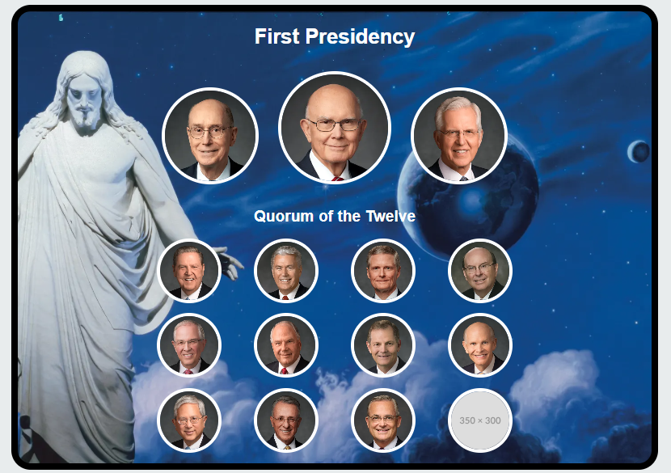
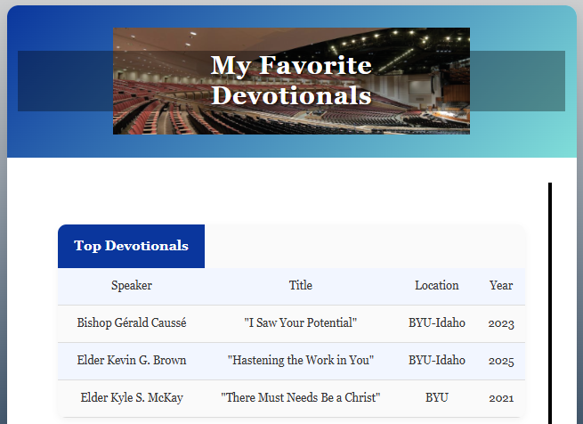
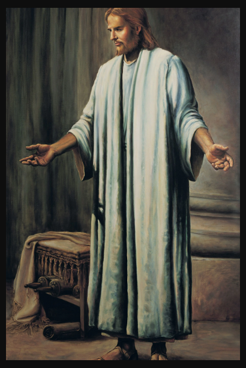
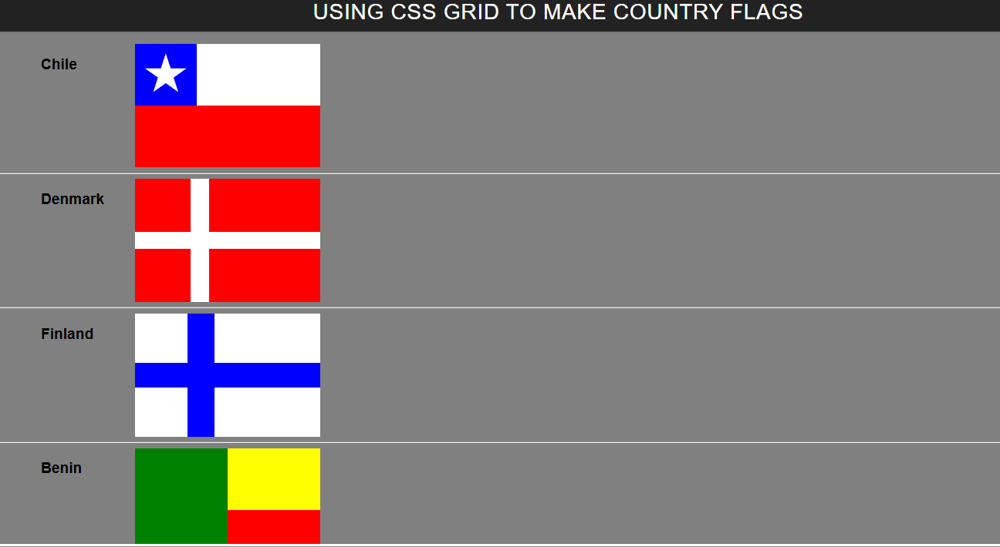
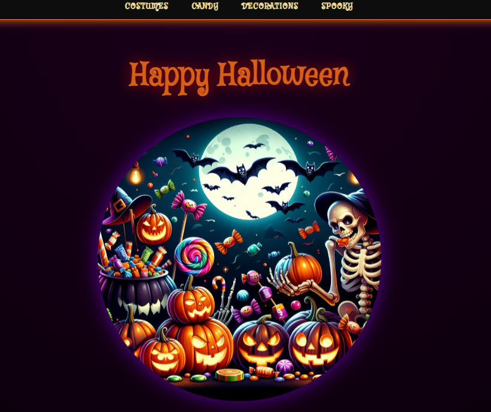
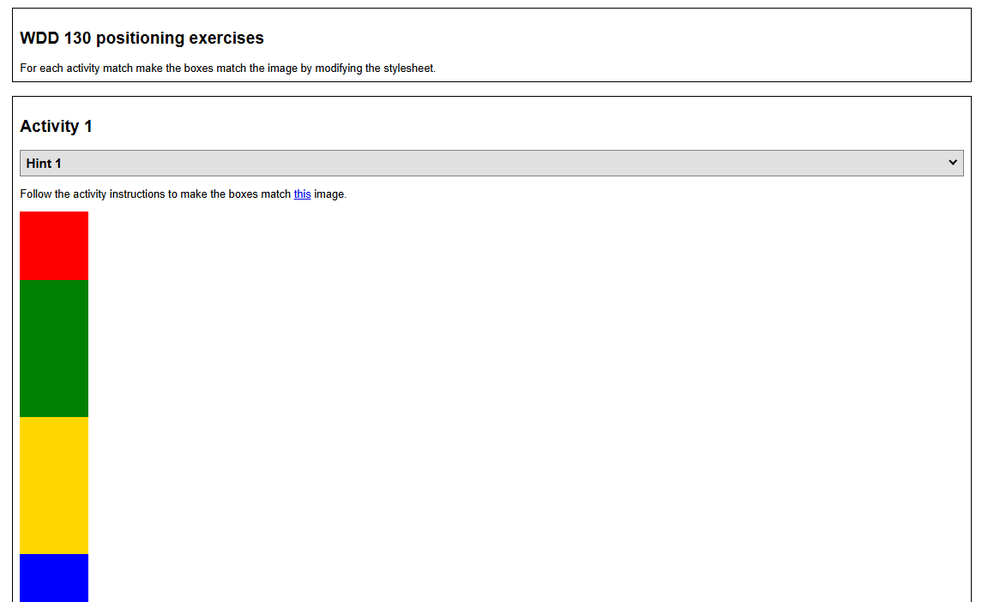
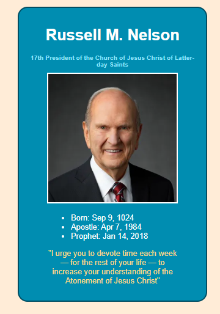

My Projects
Apostle Spotlight
A display of the current Quorum of the Twelve Apostles and First Presidency of the Church of Jesus Christ of Latter-day Saints. This project was practice using grid elements, and learning to style a grid as well as use a bckground image.
Favorite Devotional
A display of some of my favorite devotionals from BYU and BYU-Idaho. I learned how to create a table and how to use AI to polish a webpage.
Gallery
An art fallary of pictures of Jesus. I learned how to compress images, alter their dimensions, and convert them to a different format.
Grid Flags
A display of four different flags. This was practice in using CSS grid to make different designs.
Halloween
A placeholder Halloween page. This was an experiment in using CSS to create different looking pages using the same html. I learned just how useful AI can be in generating ideas for CSS and teaching how to achieve specific results with CSS.
Positioning
An unfinished page that was practice in using grid to create different designs.
Prophet Cards
A card presenting some basic information about and a notable quote from President Nelson. This was practice in building a basic page. I learned how to use an unordered list.